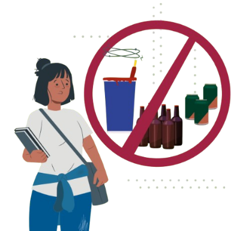
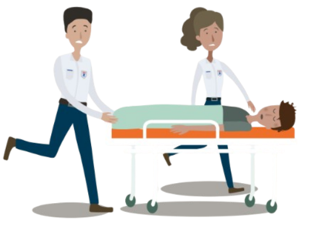

Alcohol
¡Cuídate, no inicies!
Propósito
Reconocer los riesgos del consumo de bebidas alcohólicas, su impacto en la salud física, mental y social,
así como las consecuencias de su abuso desde edades tempranas.
¿Qué es?
El alcohol es una sustancia depresora del sistema nervioso central presente en bebidas como la cerveza, vino, ron, tequila,
vodka y otras. Aunque su consumo es legal en la mayoría de los países, representa una de las principales causas de adicción,
accidentes, violencia y enfermedades crónicas en el mundo.
En México, el consumo de alcohol suele iniciar a edades cada vez más tempranas, lo que incrementa el riesgo de dependencia y
problemas de salud a largo plazo. El cuerpo de los adolescentes no está preparado para metabolizar el alcohol,
por lo que sus efectos son más dañinos y duraderos.
Formas de consumo
Las bebidas alcohólicas se clasifican por su concentración de etanol (alcohol puro).
Entre las más comunes están:
- Cerveza: entre 3% y 7% de alcohol.
- Vino: entre 9% y 15% de alcohol.
- Bebidas destiladas: (tequila, ron, vodka, whisky) entre 35% y 55% de alcohol.
Su consumo puede ser ocasional o frecuente. El uso excesivo o “binge drinking” (tomar grandes cantidades en poco tiempo)
es una práctica muy peligrosa, especialmente entre jóvenes, ya que puede causar intoxicación aguda e incluso la muerte.
Efectos durante su consumo
- Desinhibición y falsa sensación de confianza.
- Dificultad para hablar, pensar o coordinar movimientos.
- Pérdida de reflejos y equilibrio.
- Visión borrosa y somnolencia.
- En dosis altas, vómito, inconsciencia o paro respiratorio.
Efectos después del consumo
Tras el consumo, se presenta la “resaca”, con síntomas como dolor de cabeza, náusea, fatiga, ansiedad y deshidratación.
Con el tiempo, el abuso del alcohol puede generar dependencia física y emocional,
así como daños severos en órganos vitales como el hígado y el cerebro.
Principales daños irreversibles a la salud
- Daño hepático (hepatitis, cirrosis y cáncer de hígado).
- Daño cerebral y pérdida de memoria.
- Trastornos del sueño, ansiedad y depresión.
- Problemas cardíacos y digestivos.
- Adicción y deterioro de las relaciones sociales y familiares.

Ten presente:
- El alcohol es una droga legal, pero altamente adictiva y peligrosa.
- Su consumo afecta el juicio, el autocontrol y la toma de decisiones.
- Beber antes de los 18 años aumenta el riesgo de dependencia y enfermedades graves.
Mitos y realidades
- Mito: “El alcohol te hace más divertido o sociable.”
Realidad: Solo desinhibe temporalmente, pero puede causar comportamientos impulsivos o violentos.
- Mito: “Si solo bebo los fines de semana, no pasa nada.”
Realidad: El consumo excesivo ocasional también provoca daños hepáticos y cerebrales.
- Mito: “El alcohol ayuda a dormir mejor.”
Realidad: Afecta el ciclo del sueño y provoca insomnio y fatiga.
- Mito: “El alcohol no es droga porque es legal.”
Realidad: El alcohol es una droga depresora con alto potencial de adicción y daños severos a la salud.
